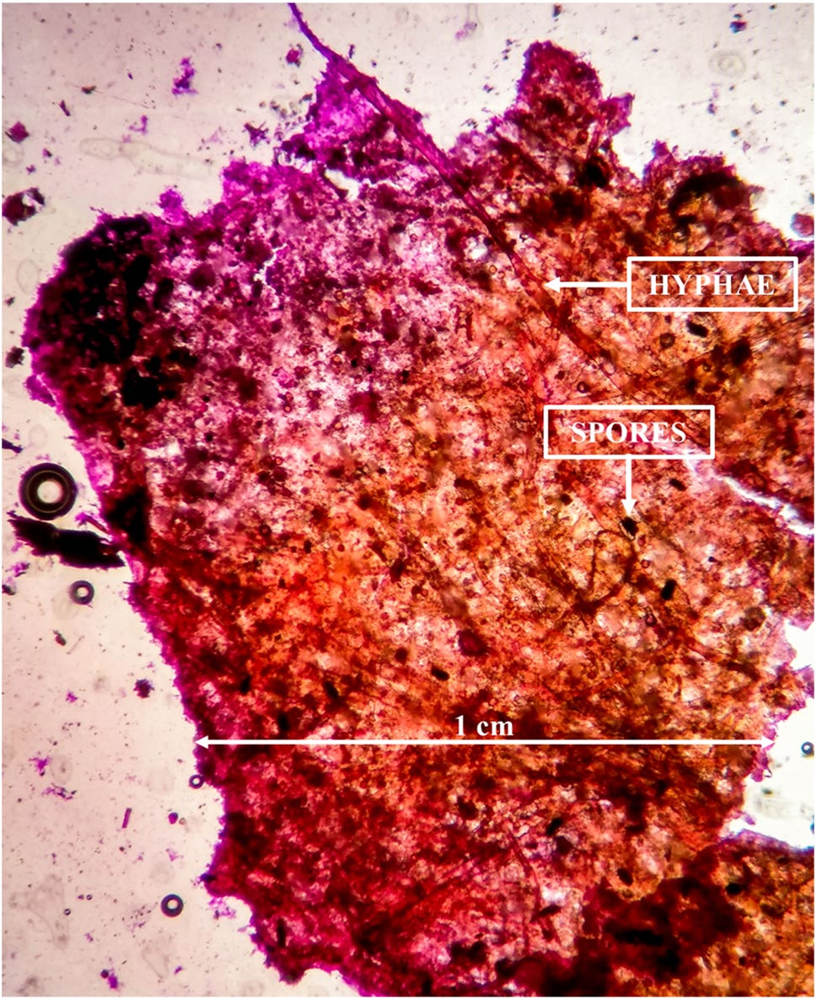

Travaux en Équipe
Résumé du Projet : Cette page met en avant des projets auxquels j'ai collaboré en tant que co-auteur ou membre d'équipe, contribuant à des initiatives interdisciplinaires sur la caractérisation des matériaux, les géopolymères et des stratégies de remédiation biologique.
Contributions Clés :
- Développement du design expérimental pour la synthèse et les tests de matériaux géopolymériques pour l'immobilisation des déchets, incluant des modèles mathématiques empiriques
- Participation à la caractérisation de champignons retrouvés dans des conteneurs fermés depuis l'accident radiologique de Goiânia (30 ans)
- Contribution à la discussion sur l’adsorption de l’uranium via des biochars et biochars activés
- Appui à la discussion sur l’effet de l’utilisation du plasma thermique pour la dégradation de déchets radioactifs solides
Techniques Impliquées : FTIR, MEB/EDS, spectroscopie gamma, synthèse de géopolymères, ICP OES
Publications Pertinentes :
- Toward Sustainable Radioactive Waste Management: Geopolymerization of Sewage Sludge Ash as a Viable Solution – ACS Omega (2025)
- Prospects for fungal bioremediation of unburied waste packages from the Goiânia radiological accident – Environmental Science and Pollution Research (2023)
- Uranium removal from aqueous solution using macauba endocarp-derived biochar: Effect of physical activation (2021)
- Experimental study on treatment of simulated radioactive waste by thermal plasma: Temporal evaluation of stable Co and Cs (2021)

Figure 1 : Vue microscopique des spores fongiques retrouvées dans des colis de déchets non enterrés

Figure 2 : Images MEB d’un biochar activé physiquement

Figure 3 : Géopolymères synthétisés avec charbons activés et résines échangeuses d’ions
Crédits d’Images :
- Figure 1 : Adaptée de Prospects for fungal bioremediation of unburied waste packages from the Goiânia radiological accident, Environmental Science and Pollution Research (2023).
- Figure 2 : Adaptée de Uranium removal from aqueous solution using macauba endocarp-derived biochar: Effect of physical activation, Environmental Pollution (2021).
- Figure 3 : Adaptée de Toward Sustainable Radioactive Waste Management: Geopolymerization of Sewage Sludge Ash as a Viable Solution, ACS Omega (2025).